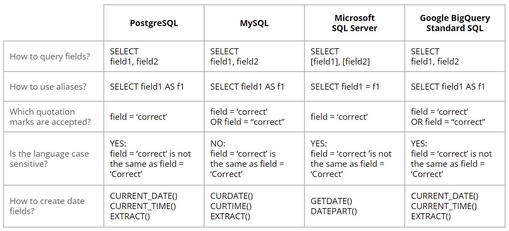

Structured Query Language (SQL) is a powerful and ubiquitous language that plays a central role in the world of data management and database systems. Whether you are a budding data analyst or an aspiring software developer, understanding SQL is essential for effectively working with relational databases. In this blog post, we will unravel the mysteries of SQL, exploring its purpose, structure, and introducing some of its important commands.
What is SQL? SQL, short for Structured Query Language, is a domain-specific language designed for managing, querying, and manipulating relational databases. It provides a standardized way to interact with databases, making it possible to store, retrieve, update, and delete data efficiently. SQL allows users to define database structures, perform complex data operations, and ensure data integrity, all through concise and powerful commands.
Key SQL Commands:
SELECT: TheSELECTstatement is one of the most fundamental commands in SQL. It allows you to retrieve data from one or more database tables. You can specify the columns to fetch, apply filters using theWHEREclause, and even perform aggregate functions likeSUM,COUNT,AVG, etc.INSERT: TheINSERTstatement is used to add new records to a database table. It allows you to specify the table name and the values to be inserted into each column, creating new rows of data.UPDATE: TheUPDATEstatement is employed to modify existing records in a database table. You can use theSETclause to update specific columns’ values and use theWHEREclause to filter the rows to be updated.DELETE: TheDELETEstatement is used to remove records from a database table. Like theUPDATEstatement, it can also be combined with the WHERE clause to selectively delete specific rows.
Creating and Modifying Database Structures:
CREATE TABLE: TheCREATE TABLEstatement is used to create a new database table. It defines the table’s columns, their data types, and any constraints like primary keys or foreign keys.ALTER TABLE: TheALTER TABLEstatement allows you to modify an existing table’s structure. You can add or drop columns, change data types, or add constraints.
Filtering and Sorting Data:
WHERE: TheWHEREclause is used to filter data based on specific conditions. It allows you to retrieve only the records that meet the specified criteria.ORDER BY: TheORDER BYclause is used to sort the retrieved data in ascending or descending order based on one or more columns.
Syntax Variations:
While SQL serves as the standardized language for interacting with relational databases, it’s important to note that different database management systems may have their own variations in SQL syntax. For example, MySQL, PostgreSQL, SQL Server, and Oracle Database, among others, may exhibit subtle differences in how they handle certain SQL commands, data types, and even functions.

These syntax variations may include slight differences in naming conventions, data type handling, date formats, and more. Therefore, when working with different database systems, it’s essential to be aware of these nuances and adapt the SQL queries accordingly.
SQL is the cornerstone of data management, enabling efficient data retrieval, manipulation, and organization within relational databases. By mastering key SQL commands, you can harness the full potential of databases and leverage data-driven insights for decision-making and application development. As you dive deeper into the world of SQL, you’ll unlock endless possibilities to explore, analyze, and extract meaningful information from vast datasets.